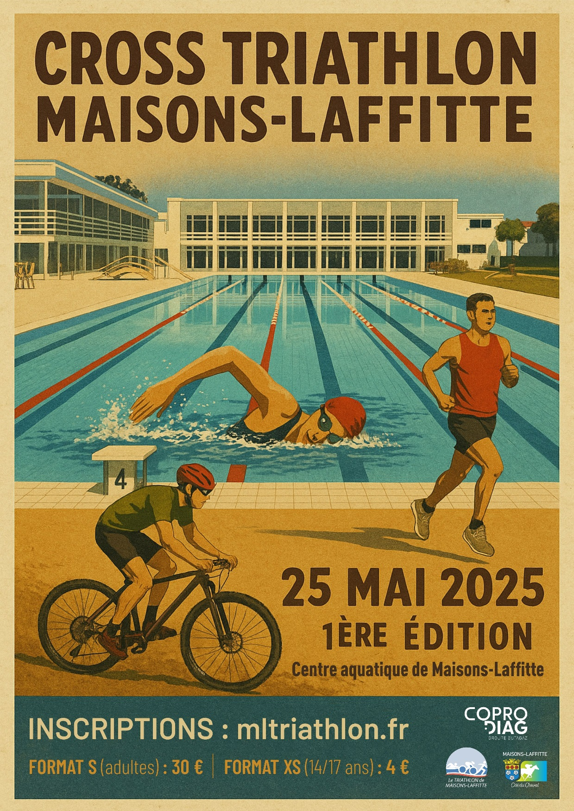
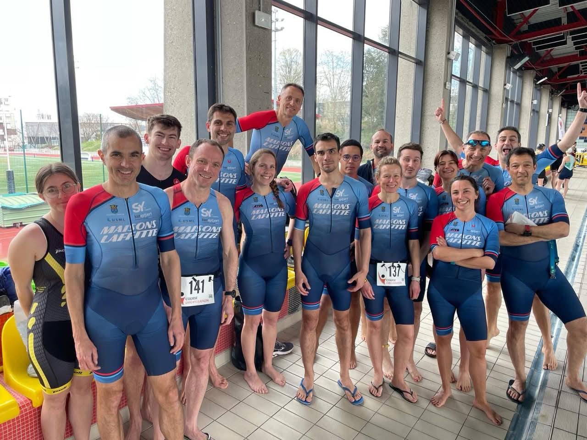
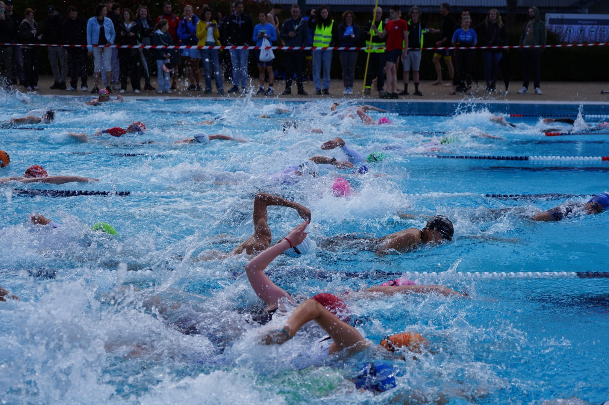
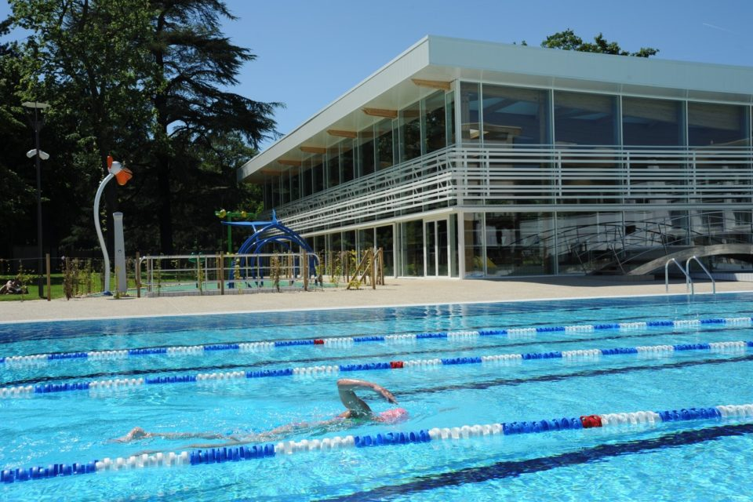
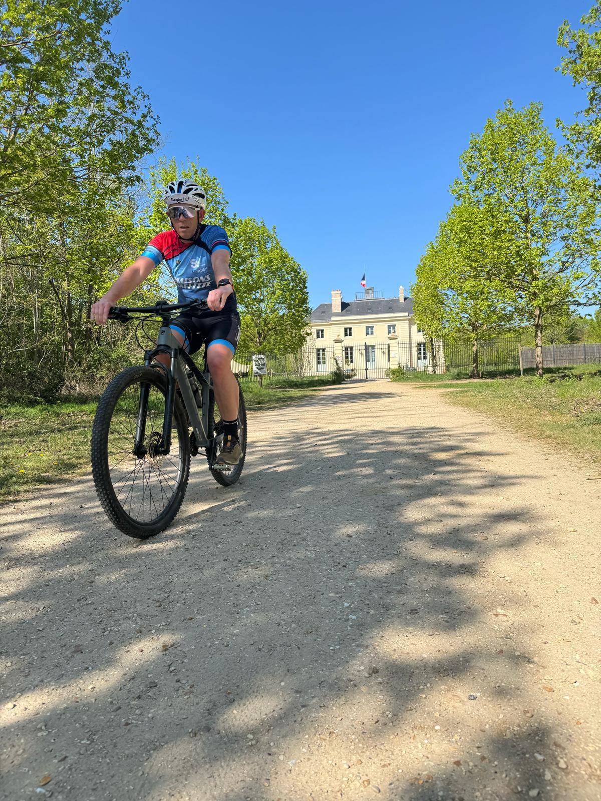

Présentation
La seconde édition du Cross-Triathlon de Maisons-Laffitte aura lieu le dimanche 07 juin 2026.
Les informations sur cette page concernent l'édition 2025. L'édition 2026 conserve les mêmes caractéristiques mais nous vous invitons cependant à revenir prochainement pour découvrir les détails de l'édition 2026 !
Plongez dans l’aventure d’un triathlon unique en son genre. Au programme : un départ en natation par vagues dans le bassin extérieur du centre aquatique de Maisons-Laffitte, suivi d’un parcours VTT au cœur de la forêt domaniale de Saint-Germain-en-Laye, avant de terminer par une course à pied dans le cadre exceptionnel du parc de Maisons-Laffitte.
Organisé par le club de triathlon de Maisons-Laffitte avec le soutien de la ville, cet événement promet une expérience sportive intense et conviviale. Sur les 210 places disponibles, plus de la moitié sont déjà réservées : ne manquez pas cette première édition qui s’annonce mémorable !
La course est ouverte aussi bien aux triathlètes aguerris à la recherche d'un bon classement qu'aux sportifs voulant découvrir le triple effort. 🏊♂️🚴♂️🏃♂️. En effet, sa natation en piscine, son parcours VTT roulant, ses départs par vagues de niveau et ses distances S et XS pour les jeunes rendent la compétition accessible à tous et sans nécessiter de matériel spécifique.




